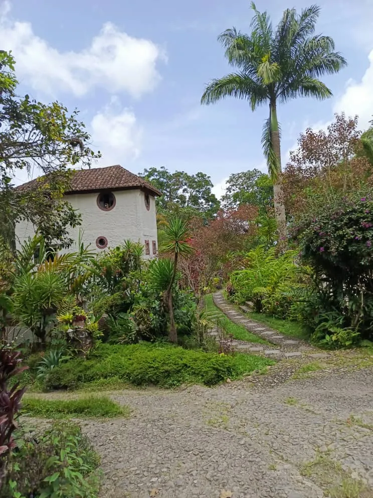

Café de montaña
Finca cafetalera y ruta del café
La posada es también una finca cafetalera, en la montaña de Sanare y cerca de la ruta del café.
PosadaRestauranteFinca cafetalera
Hospedarse en una finca de café.
El Rincón de las Golondrinas es posada, restaurante y finca cafetalera al mismo tiempo. El café se da en la montaña, con el clima fresco de Sanare, y la posada queda cerca de la ruta del café.
Si quiere conocer la finca o recorrer la ruta del café durante su estadía, escríbanos y le contamos.
La montaña alrededor.
Aquí va:foto de los cafetales
Reserve en tres pasos.
Escríbanos con sus fechas
Por WhatsApp, con el día de llegada, el de salida y cuántas personas vienen.
Le confirmamos
La disponibilidad y la tarifa de la habitación o cabaña que prefiera.
Le enviamos cómo llegar
La ubicación y las indicaciones del camino hasta la posada.